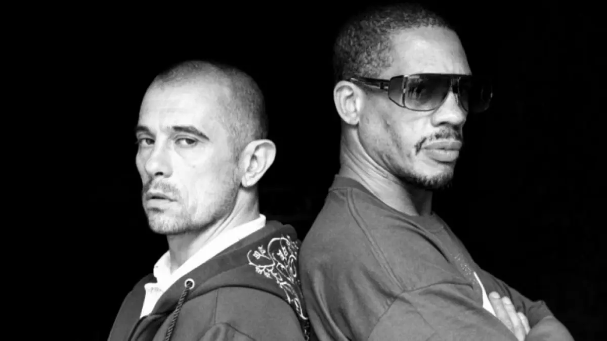
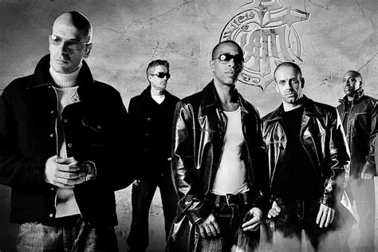

Appuyer ici!!!
Nom d'artiste :
Mc Solaar
Né le :
5 mars 1969 au Dakar,Sénégal

Nom du groupe :
NTM
Menbres principaux :
JoeyStar
Kool Shen
Fondé en :
1989 à Saint-Denis (93)

Nom du groupe : IAM Membres
principaux :
Akhenaton
Shurik'n
Kheops (DJ)
Kephren
Freeman
Groupe fondé en : 1989